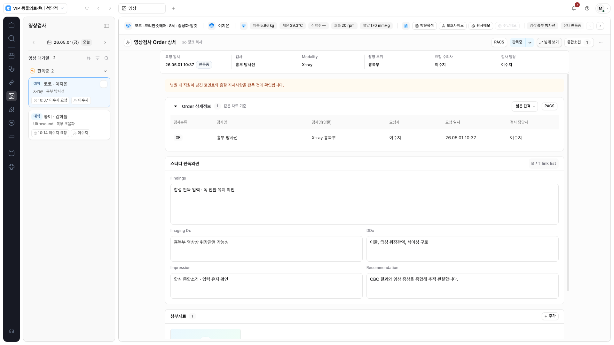
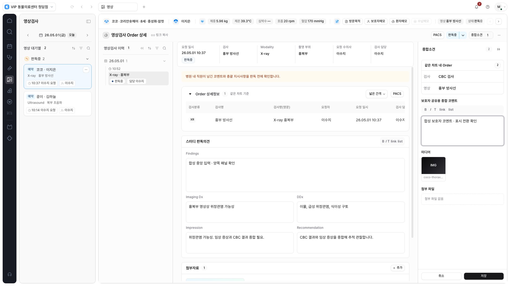
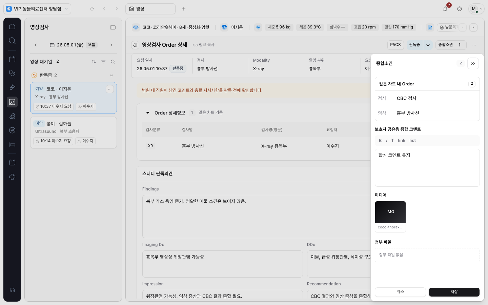
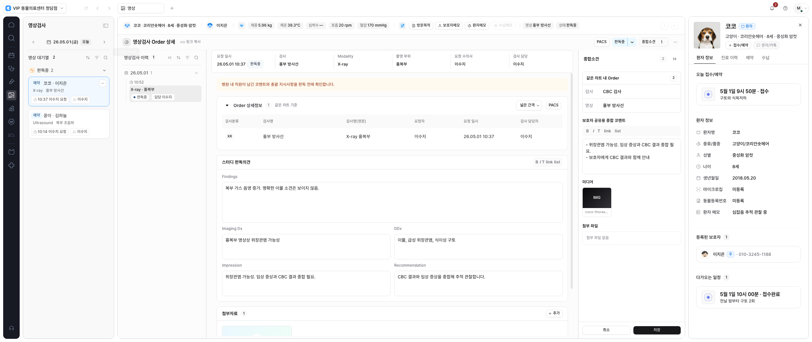

영상 판독 보고서에
좁게·넓게 보기와 내부 종합소견을 적용했습니다.
로컬 구현 · 화면 검토 대기
보고서는 1,280px로 모아 보고, 필요할 때 사용 가능한 폭으로 펼칠 수 있습니다. 영상 이력과 기존 종합소견·첨부 영역은 환자 정보 아래에서 함께 확인합니다.
기존 합성 시나리오와 합성 응답으로 검증했습니다. 실제 PACS viewer는 현재 화면에 연결되어 있지 않으며, 이번 결과는 판독 보고서의 배치와 입력 유지 검증입니다.
이번에 달라진 점
대기열·내부 패널·프로필을 제외한 실제 문서 공간이 1,280px보다 넓을 때 폭 버튼이 나타납니다. 공간이 줄어 버튼이 숨겨져도 선택한 보기 모드는 유지합니다.
종합소견 버튼은 문서 도구줄로 옮겼습니다. 좁은 화면에서 모달을 닫으면 이 버튼으로 포커스가 돌아옵니다. 환자 정보는 위쪽 헤더와 바깥 프로필 영역을 계속 사용합니다.
같은 보고서에서 폭 비교
1,920px 화면의 좁게·넓게 보기를 비교합니다. 판독 내용과 종합소견의 합성 입력을 유지한 검증 캡처입니다.

Order 상세표의 열·기본 간격은 유지합니다. 폭과 패널 전환 중 응답이 멈추던 표 상태 초기화 문제도 수정해 실제 클릭으로 다시 검증했습니다.
이력과 종합소견을 함께 보기
넓은 공간에서는 양쪽 패널을 보고서 옆에 표시합니다. 판독 입력과 보호자 코멘트를 유지하고, 표·본문의 넘치는 내용은 각 영역 안에서 스크롤합니다.

공간이 부족하면 최근에 연 패널을 모달로 표시합니다. Tab 포커스는 모달 안에 머물고, Escape로 닫으면 해당 버튼으로 돌아갑니다. 표시 방식이 바뀌어도 입력 중인 코멘트를 유지합니다.

환자 프로필과 함께 보기
환자 프로필은 바깥 오른쪽 영역을 사용합니다. 영상 종합소견과 동시에 열어도 서로를 대체하거나 겹치지 않는지 확인했습니다.

검증 결과
최종 브라우저 검증 46개 항목 통과. 새 영상 레이아웃 8개, 기존 검사·영상 11개, 공유 패널 5개, 검사 공통 레이아웃 9개, 차트 6개, 조제/처치 7개를 확인했습니다.
| 영역 | 확인한 내용 |
|---|---|
| 보고서·보기 상태 | 판독·종합소견 입력, 화면 유지, 표 열·간격 전환, 세로·가로 스크롤, 모듈별 폭 설정 |
| 패널·접근성 | 이력 접기 상태, 코멘트 입력 유지, 최근 패널의 모달 표시, Tab·Escape·포커스 복귀, 프로필 공존 |
| 화면 크기 | 1366 / 1440 / 1600 / 1920 / 2560 및 960 CSS px, 실제 남은 폭 기준, 모션 감소 |
| 기존 흐름·정적 검사 | 판독 상태 동작, 첨부 목록, 빈 업무·실제 응답 형태의 합성 대기열, 다른 모듈 회귀, 빌드·타입·ESLint·문서·diff·보안 검사 |
960 CSS px는 확대에 따른 공간 부족을 확인하는 대체 조건입니다. 실제 브라우저 확대, 운영 인증 데이터, 실제 영상 확대·다중 비교나 임상 사용성 평가는 포함하지 않습니다.
범위와 다음 단계
검사·영상 모듈의 영상 부분, 모듈 레지스트리, 관련 브라우저 테스트, 폭 계약과 작업 항목을 갱신했습니다. 기존 기본 체크아웃의 작업은 보존했습니다.
실제 PACS 연결, 파일 업로드, 판독·코멘트 저장 기능의 확장은 이번 범위에 포함하지 않습니다. API·DB·권한 계약은 유지했고 커밋·푸시·병합·배포나 실제 데이터 작업도 수행하지 않았습니다.
다음 대상은 수납입니다. 금액·청구표·결제 동작의 기존 제약을 확인한 뒤 폭 계약을 연결하는 순서입니다.